容器其实是一种沙盒技术。顾名思义，沙盒就是能够像一个集装箱一样，把你的应用装起来的技术。这样，应用与应用之间，就因为有了边界而不至于相互干扰。对于应用来说，它的静态表现就是程序，平常都安安静静地待在磁盘上；而一旦运行起来，它就变成了计算机里的数据和状态的总和，这就是它的动态表现。容器技术的核心功能，就是通过约束和修改进程的动态表现，从而为其创造出一个边界。对于Docker等大多数Linux容器来说，Cgroups技术是用来制造约束的主要手段，而Namespace技术则是用来修改进程视图的主要方法。本篇文章的主要目标就是手动利用Linux提供的 Cgroup 和 Namespace 技术创建出一个容器。
首先我们从容器镜像开始，从我们对容器的认识来说，进入到容器之后，看到了一个独立的文件系统，和宿主机完全隔离，包含了应用程序所需要的数据、文件以及所有依赖，而容器镜像就是用来构建应用程序所需的文件系统，容器镜像有一个更为专业的名字，叫做 rootfs 根文件系统，当我们启动一个进程时，为进程启用Linux Namespace配置，设置Cgroup参数用于资源限制，切换进程的根目录，这样它看起来就像在一个独立的系统中运行。但是需要明确的是，rootfs只是一个操作系统所包含的文件、配置和目录，并不包括操作系统内核。在Linux操作系统中，这两部分是分开存放的，操作系统只有在开机启动时才会加载指定版本的内核镜像。因此同一台机器上的所有容器，都共享宿主机操作系统的内核。
这就意味着，如果我们的应用程序需要配置内核参数、加载额外的内核模块，以及跟内核进行直接的交互，就需要注意了：这些操作和依赖的对象，都是宿主机操作系统的内核，它对于该机器上的所有容器来说是一个“全局变量”，牵一发而动全身。这也是容器相比于虚拟机的主要缺陷之一：毕竟后者不仅有模拟出来的硬件机器充当沙盒，而且每个沙盒里还运行着一个完整的Guest OS给应用随便折腾。
所以，容器启动快是因为本质上就是宿主机上的一个进程而已，启动一个进程的速度当然比启动一个虚拟机的速度快。不过，正是由于rootfs的存在，容器才有了一个被反复宣传至今的重要特性：一致性，rootfs里打包的不只是应用，而是整个操作系统的文件和目录，也就意味着，应用以及它运行所需要的所有依赖，都被封装在了一起。无论在本地、云端，还是在一台任何地方的机器上，用户只需要解压打包好的容器镜像，那么这个应用运行所需要的完整的执行环境就被重现出来了。这种深入到操作系统级别的运行环境一致性，打通了应用在本地开发和远端执行环境之间难以逾越的鸿沟。
为了减少镜像占用的磁盘空间大小，也为了简化镜像制作的难度，Docker在镜像的设计中引入了分层的设计，将用户制作镜像的每一步操作，都生成一个层，也就是一个增量rootfs，最后将这些不同的层通过联合挂载生成最终的文件系统。举个例子，就像我们利用Ubuntu的基础镜像运行一个Python应用，首先安装好Python的环境，最后部署我们的应用，我们可以将在安装好的Python的环境打包成一个的新的层，这样不同的人都可以在这个层上构建自己的应用，当在相同主机上跑多个不同应用的时候大家的基础镜像一致，也不会造成额外的空间浪费，带有Python环境的rootfs都是相同的，只是最后联合挂载了不同的应用层而已。
Docekr 目前使用overlay2存储驱动 作为它的联合文件系统实现，当然可以更换，使用下面的命令可以查看Docker当前使用的文件系统是什么：
1 2 root@ctrlnode:/home/ubuntu# docker info |grep Storage Storage Driver: overlay2
overlay2 的目录是镜像和容器分层的基础，而把这些层统一展现到同一的目录下的过程称为联合挂载（union mount）。overlay2把目录的下一层叫作lowerdir，上一层叫作upperdir，联合挂载后的结果叫作merged，我们来使用 overlay 做个联合挂载的示例，在本地准备如下的目录和文件结构，work 目录是 overlay 的内部目录，merged 是我们合并之后的目录：
1 2 3 4 5 6 7 8 9 10 11 12 13 14 15 root@ctrlnode:/home/ubuntu# tree ufs/ ufs ├── lower1 │ ├── a.txt │ └── n.txt // lower1 ├── lower2 │ ├── b.txt │ ├── n.txt // lower2 │ └── x.txt // lower ├── upper │ ├── c.txt │ └── x.txt // upper └── work 6 directories, 5 files
使用如下的命令进行联合挂载：
mount -t overlay overlay -o lowerdir=./lower2:./lower1,upperdir=./upper,workdir=./work ./merged
1 2 3 4 5 6 7 8 9 10 11 12 13 14 root@ctrlnode:/home/ubuntu/ufs# mount -t overlay overlay -o lowerdir=./lower2:./lower1,upperdir=./upper,workdir=./work ./merged root@ctrlnode:/home/ubuntu/ufs# ll merged/ total 12 drwxr-xr-x 1 root root 4096 Dec 23 15:40 ./ drwxr-xr-x 7 root root 4096 Dec 23 16:16 ../ -rw-r--r-- 1 root root 0 Dec 23 15:36 a.txt -rw-r--r-- 1 root root 0 Dec 23 15:11 b.txt -rw-r--r-- 1 root root 0 Dec 23 15:12 c.txt -rw-r--r-- 1 root root 7 Dec 23 16:14 n.txt -rw-r--r-- 1 root root 6 Dec 23 15:12 x.txt root@ctrlnode:/home/ubuntu/ufs# cat merged/x.txt upper root@ctrlnode:/home/ubuntu/ufs# cat merged/n.txt lower2
根据结果可以看到，这三层的顺序从高到低一次是：upper，lower2以及lower1，遇到相同的文件，高层的会覆盖底层的。可以使用如下的命令查看当前系统是使用overlay挂在的所有目录：
mount -t overlay
1 2 3 root@ctrlnode:/home/ubuntu/ufs# mount -t overlay ... overlay on /home/ubuntu/ufsmerged type overlay (rw,relatime,lowerdir=./lower1:./lower2,upperdir=./upper,workdir=./work)
联合挂载会对三个个目录进行合并，相同的文件会以上层的为准，下层的被覆盖。取消挂载使用下面的命令：
umount ./merged/
我们来看看 ubuntu:16.04 镜像的内部的rootfs是怎么样的，使用如下的命令可以查看镜像内部是如何组织的：
docker image inspect ubuntu:16.04
1 2 3 4 5 6 7 8 9 10 11 12 13 14 15 16 17 18 19 20 21 root@ctrlnode:/home/ubuntu# docker image inspect ubuntu:16.04 ... "GraphDriver": { "Data": { "LowerDir": "/opt/docker/overlay2/e7e4c97b79692b3c93fd986689f7570663ecdc5f77df501c3c0a6646728f71c0/diff:/opt/docker/overlay2/e112d0f0a503819daf4474e26245cc96eea478b1f5455fcefb87906d6e331595/diff:/opt/docker/overlay2/73ec65352916fd1bb00a975f67bb4062e8b916d31502c0169b9c6000095efc8d/diff", "MergedDir": "/opt/docker/overlay2/5fdbc8665d8f7ae5b4df1b6d37de45f2debefa5dbdd285d5362c799d6879c8d7/merged", "UpperDir": "/opt/docker/overlay2/5fdbc8665d8f7ae5b4df1b6d37de45f2debefa5dbdd285d5362c799d6879c8d7/diff", "WorkDir": "/opt/docker/overlay2/5fdbc8665d8f7ae5b4df1b6d37de45f2debefa5dbdd285d5362c799d6879c8d7/work" }, "Name": "overlay2" }, "RootFS": { "Type": "layers", "Layers": [ "sha256:be96a3f634de79f523f07c7e4e0216c28af45eb5776e7a6238a2392f71e01069", "sha256:df54c846128da3c71cc11b2150a3df39ec86fb170e299765daf6bb016a0705c2", "sha256:47ef83afae74745639f6738a05fe5320fcfca9e6c7765fba4f25e270bc0df9dc", "sha256:1251204ef8fc20da275e09f6e3ab9205421d4ff34732f2d50a1d3e86d2995edd" ] }, ...
从 RootFS.Layers 可以看到这个镜像一共有四层，这里面的顺序是从低层到高层，从 .GraphDriver.Data 中的数据我们可以看到每一层在宿主机上的存储位置，GraphDriver.Data.LowerDir 的顺序是从高层到最底层，也就是说列表中最后一个元素是最底层的。所以对于这个镜像来说的，它的四层层级关系从低到高是这样的：
1 2 3 4 /opt/docker/overlay2/73ec65352916fd1bb00a975f67bb4062e8b916d31502c0169b9c6000095efc8d/ /opt/docker/overlay2/e112d0f0a503819daf4474e26245cc96eea478b1f5455fcefb87906d6e331595/ /opt/docker/overlay2/e7e4c97b79692b3c93fd986689f7570663ecdc5f77df501c3c0a6646728f71c0/ /opt/docker/overlay2/5fdbc8665d8f7ae5b4df1b6d37de45f2debefa5dbdd285d5362c799d6879c8d7/
那么每一层是如何知道上一层是什么呢？进入到第二层中，我们会发现存在以下文件：
1 2 3 4 5 6 7 8 9 root@ctrlnode:/opt/docker/overlay2/e112d0f0a503819daf4474e26245cc96eea478b1f5455fcefb87906d6e331595# ll total 196 drwx------ 4 root root 4096 Dec 23 15:32 ./ drwx------ 160 root root 176128 Dec 23 16:24 ../ -rw------- 1 root root 0 Dec 23 15:32 committed drwxr-xr-x 6 root root 4096 Dec 23 15:32 diff/ -rw-r--r-- 1 root root 26 Dec 23 15:32 link -rw-r--r-- 1 root root 28 Dec 23 15:32 lower drwx------ 2 root root 4096 Dec 23 15:32 work/
diff 目录保存的是当前层的内容，link 存储的是这个层对应的短id，因为mount命令挂在的时候对参数长度有限制，所以将/opt/docker/overlay2/l/短id 映射到该层的diff目录，挂在的时候就可以使用这个较短的路径：
cd /opt/docker/overlay2/l/H3AOMG26MY5WYIL3VZDJBCHVLU
1 2 3 4 5 6 7 8 9 10 11 12 root@ctrlnode:/opt/docker/overlay2/e112d0f0a503819daf4474e26245cc96eea478b1f5455fcefb87906d6e331595# cat link H3AOMG26MY5WYIL3VZDJBCHVLU root@ctrlnode:/opt/docker/overlay2/e112d0f0a503819daf4474e26245cc96eea478b1f5455fcefb87906d6e331595# cd /opt/docker/overlay2/l/H3AOMG26MY5WYIL3VZDJBCHVLU root@ctrlnode:/opt/docker/overlay2/l/H3AOMG26MY5WYIL3VZDJBCHVLU# ll total 24 drwxr-xr-x 6 root root 4096 Dec 23 15:32 ./ drwx------ 4 root root 4096 Dec 23 15:32 ../ drwxr-xr-x 4 root root 4096 Aug 31 2021 etc/ drwxr-xr-x 2 root root 4096 Aug 31 2021 sbin/ drwxr-xr-x 3 root root 4096 Aug 5 2021 usr/ drwxr-xr-x 3 root root 4096 Aug 5 2021 var/ root@ctrlnode:/opt/docker/overlay2/l/H3AOMG26MY5WYIL3VZDJBCHVLU#
lower 文件存储的是上一层diff目录的段路径，省略了/opt/docker/overlay2 这个前缀，可以通过下面的输出进行对比当前层lower文件内容和上次的 link 文件中的id：
1 2 3 4 5 6 root@ctrlnode:/opt/docker/overlay2/e112d0f0a503819daf4474e26245cc96eea478b1f5455fcefb87906d6e331595# cat lower l/AOHW2LHRWAAO6ZAC2ANHACGJUO root@ctrlnode:/opt/docker/overlay2/e112d0f0a503819daf4474e26245cc96eea478b1f5455fcefb87906d6e331595# root@ctrlnode:/opt/docker/overlay2/e112d0f0a503819daf4474e26245cc96eea478b1f5455fcefb87906d6e331595# cat /opt/docker/overlay2/73ec65352916fd1bb00a975f67bb4062e8b916d31502c0169b9c6000095efc8d/link AOHW2LHRWAAO6ZAC2ANHACGJUO root@ctrlnode:/opt/docker/overlay2/e112d0f0a503819daf4474e26245cc96eea478b1f5455fcefb87906d6e331595#
对于第三层来说，它的 lower 中存储的是前两层中的diff目录段路径：
1 2 3 root@ctrlnode:/opt/docker/overlay2/e112d0f0a503819daf4474e26245cc96eea478b1f5455fcefb87906d6e331595# cat /opt/docker/overlay2/e7e4c97b79692b3c93fd986689f7570663ecdc5f77df501c3c0a6646728f71c0/lower l/H3AOMG26MY5WYIL3VZDJBCHVLU:l/AOHW2LHRWAAO6ZAC2ANHACGJUO root@ctrlnode:/opt/docker/overlay2/e112d0f0a503819daf4474e26245cc96eea478b1f5455fcefb87906d6e331595#
这样对于Docekr来说，基于相同层构建的镜像在相同的主机上它们知会存储一份，大大减少了磁盘占用，这种层概念的引入也方便了镜像的制作和分发。
上面我们介绍Docker镜像中每个层的内容以及联合挂载，我们现在来看一个运行中的容器它的RootFS是怎么样的。使用下面的命令启动一个容器进行观察：
docker run --rm -it -d --name ubuntu1604 ubuntu:16.04
然后查看容器运行时的联合目录挂载在哪里，我们可以使用docker inspect 命令进行查看：
docker inspect --format '{{json .GraphDriver.Data }}' ubuntu1604
1 2 3 4 5 6 7 root@ctrlnode:/home/michael# docker inspect --format '{{json .GraphDriver.Data }}' ubuntu1604 | python3 -m json.tool { "LowerDir": "/opt/docker/overlay2/13d52c11b99ed6322da1d049e6a65108bf3d7239d5ad873c78f1e6c08b6fe8b5-init/diff:/opt/docker/overlay2/5fdbc8665d8f7ae5b4df1b6d37de45f2debefa5dbdd285d5362c799d6879c8d7/diff:/opt/docker/overlay2/e7e4c97b79692b3c93fd986689f7570663ecdc5f77df501c3c0a6646728f71c0/diff:/opt/docker/overlay2/e112d0f0a503819daf4474e26245cc96eea478b1f5455fcefb87906d6e331595/diff:/opt/docker/overlay2/73ec65352916fd1bb00a975f67bb4062e8b916d31502c0169b9c6000095efc8d/diff", "MergedDir": "/opt/docker/overlay2/13d52c11b99ed6322da1d049e6a65108bf3d7239d5ad873c78f1e6c08b6fe8b5/merged", "UpperDir": "/opt/docker/overlay2/13d52c11b99ed6322da1d049e6a65108bf3d7239d5ad873c78f1e6c08b6fe8b5/diff", "WorkDir": "/opt/docker/overlay2/13d52c11b99ed6322da1d049e6a65108bf3d7239d5ad873c78f1e6c08b6fe8b5/work" }
从这里我们可以看到这个容器在启动的时候增加了两层，分别是init层和当前的UpperDir，其他的四层都是我们镜像中的，这些层可以分为3类：
镜像层，镜像层的内容是原始镜像中，我们不可以对这些文件进行修改，即使看起来在修改可读镜像中的文件，只不过是在 UpperDir 中生成了同样的文件而已，而且将镜像层的文件进行覆盖了；
init层：Init层是Docker项目单独生成的一个内部层，专门用来存放/etc/hosts、/etc/resolv.conf等信息。需要这样一层的原因是，这些文件本来属于只读的Ubuntu镜像的一部分，但是用户往往需要在启动容器时写入一些指定的值比如hostname，所以就需要在可读写层对它们进行修改。可是，这些修改往往只对当前的容器有效，我们并不希望执行docker commit时，把这些信息连同可读写层一起提交掉。所以，Docker做法是，在修改了这些文件之后，以一个单独的层挂载了出来。而用户执行docker commit只会提交可读写层，所以是不包含这些内容的；
UpperDir，这个目录是 Docekr 在启动容器的时候自动帮我们生成，当我们在容器里面修改或者创建文件的时候，都会体现在这个层，docker commit 会提交这个层的内容。例如，进入容器，创建一个文件：
1 2 3 root@ctrlnode:/home/michael# docker exec -itu root ubuntu1604 bash root@27d5a5b4d352:/# mkdir /home/test root@27d5a5b4d352:/# touch /home/test/test.txt
然后查看宿主机上的 MergedDir 和 UpperDir：
1 2 3 4 5 6 7 8 9 10 11 root@ctrlnode:/opt/docker/overlay2/13d52c11b99ed6322da1d049e6a65108bf3d7239d5ad873c78f1e6c08b6fe8b5# ll merged/home/test/ total 8 drwxr-xr-x 2 root root 4096 Dec 23 17:21 ./ drwxr-xr-x 1 root root 4096 Dec 23 17:21 ../ -rw-r--r-- 1 root root 0 Dec 23 17:21 test.txt root@ctrlnode:/opt/docker/overlay2/13d52c11b99ed6322da1d049e6a65108bf3d7239d5ad873c78f1e6c08b6fe8b5# ll diff/home/test/ total 8 drwxr-xr-x 2 root root 4096 Dec 23 17:21 ./ drwxr-xr-x 3 root root 4096 Dec 23 17:21 ../ -rw-r--r-- 1 root root 0 Dec 23 17:21 test.txt root@ctrlnode:/opt/docker/overlay2/13d52c11b99ed6322da1d049e6a65108bf3d7239d5ad873c78f1e6c08b6fe8b5#
对容器中的文件进行操作，都反映在了联合挂载的目录中，以及Docker自动创建的层。那么如果对于删除文件该如何进行的呢？使用如下的命令在删除容器中的文件，这个文件是基础镜像层提供的：
1 2 3 root@ctrlnode:/home/michael# docker exec -itu root ubuntu1604 bash root@27d5a5b4d352:/# root@27d5a5b4d352:/# rm -f /bin/true
这个时候我们去 MergedDir 中查看该文件已经是不存在的了，但是去UpperDir发现生成了一个特殊文件：
1 2 3 4 5 6 tailf tar tempfile touch root@ctrlnode:/opt/docker/overlay2/13d52c11b99ed6322da1d049e6a65108bf3d7239d5ad873c78f1e6c08b6fe8b5# ll diff/bin/ total 8 drwxr-xr-x 2 root root 4096 Dec 23 17:29 ./ drwxr-xr-x 5 root root 4096 Dec 23 16:48 ../ c--------- 2 root root 0, 0 Dec 23 17:29 true
这里的c代表字符设备，设备编号 是 0/0，这是 overlaylower 中的文件时，会在 Upper 中生成一个特殊的编号 0/0 的字符设备文件，这样在最终的 merged 目录中，发现这个文件和某个 lower 中的文件匹配时就不显示了。
整个容器运行时的 RootFS 可以用如下的图描述：
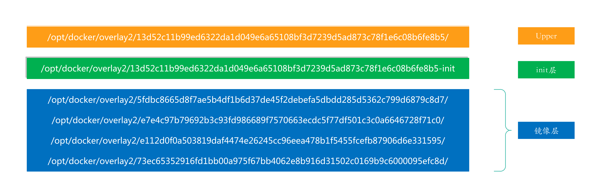
Linux Cgroups就是Linux内核中用来为进程设置资源限制的一个重要功能，它的全称是Linux Control Group。它最主要的作用，就是限制一个进程组能够使用的资源上限，包括CPU、内存、磁盘、网络带宽等等。此外，Cgroups还能够对进程进行优先级设置、审计，以及将进程挂起和恢复等操作。
在Linux中，Cgroups给用户暴露出来的操作接口是文件系统，即它以文件和目录的方式组织在操作系统的/sys/fs/cgroup路径下。我们可以使用如下的命令将他们展示出来:
mount -t cgroup
1 2 3 4 5 6 7 8 9 10 11 12 13 14 15 root@ctrlnode:/home/michael# mount -t cgroup cgroup on /sys/fs/cgroup/cpuset type cgroup (rw,nosuid,nodev,noexec,relatime,cpuset) cgroup on /sys/fs/cgroup/cpu type cgroup (rw,nosuid,nodev,noexec,relatime,cpu) cgroup on /sys/fs/cgroup/cpuacct type cgroup (rw,nosuid,nodev,noexec,relatime,cpuacct) cgroup on /sys/fs/cgroup/blkio type cgroup (rw,nosuid,nodev,noexec,relatime,blkio) cgroup on /sys/fs/cgroup/memory type cgroup (rw,nosuid,nodev,noexec,relatime,memory) cgroup on /sys/fs/cgroup/devices type cgroup (rw,nosuid,nodev,noexec,relatime,devices) cgroup on /sys/fs/cgroup/freezer type cgroup (rw,nosuid,nodev,noexec,relatime,freezer) cgroup on /sys/fs/cgroup/net_cls type cgroup (rw,nosuid,nodev,noexec,relatime,net_cls) cgroup on /sys/fs/cgroup/perf_event type cgroup (rw,nosuid,nodev,noexec,relatime,perf_event) cgroup on /sys/fs/cgroup/net_prio type cgroup (rw,nosuid,nodev,noexec,relatime,net_prio) cgroup on /sys/fs/cgroup/hugetlb type cgroup (rw,nosuid,nodev,noexec,relatime,hugetlb) cgroup on /sys/fs/cgroup/pids type cgroup (rw,nosuid,nodev,noexec,relatime,pids) cgroup on /sys/fs/cgroup/rdma type cgroup (rw,nosuid,nodev,noexec,relatime,rdma) cgroup on /sys/fs/cgroup/systemd type cgroup (rw,nosuid,nodev,noexec,relatime,xattr,name=systemd)
它的输出结果，是一系列文件系统目录。如果自己的机器上没有看到这些目录，就需要自己去挂载Cgroups，具体做法可以自行Google。可以看到，在/sys/fs/cgroup下面有很多诸如cpuset、cpu、 memory这样的子目录，也叫子系统。这些都是我这台机器当前可以被Cgroups进行限制的资源种类。而在子系统对应的资源种类下，你就可以看到该类资源具体可以被限制的方法。比如，对CPU子系统来说，我们就可以看到如下几个配置文件，这个指令是：
/sys/fs/cgroup/cpu
1 2 3 4 5 root@ctrlnode:/home/michael# ls /sys/fs/cgroup/cpu total 0 dr-xr-xr-x 11 root root 0 Dec 6 08:59 ./ drwxr-xr-x 19 root root 380 Dec 13 11:13 ../ cgroup.clone_children cpu.cfs_period_us cpu.rt_period_us cpu.shares notify_on_release cgroup.procs cpu.cfs_quota_us cpu.rt_runtime_us cpu.stat tasks
如果熟悉Linux CPU管理的话，就会在它的输出里注意到cfs_period和cfs_quota这样的关键词。这两个参数需要组合使用，可以用来限制进程在长度为cfs_period的一段时间内，只能被分配到总量为cfs_quota的CPU时间。我们在这个 /sys/fs/cgroup/cpu 创建一个目录，这个目录被称为控制组，而且在新创建的目录下，自动生成该子系统对应的资源限制文件：
1 2 3 4 5 6 7 8 9 10 11 12 13 14 15 16 root@ctrlnode:/home/michael# cd /sys/fs/cgroup/cpu/container root@ctrlnode:/sys/fs/cgroup/cpu/container# root@ctrlnode:/sys/fs/cgroup/cpu/container# ll total 0 drwxr-xr-x 2 root root 0 Dec 23 18:43 ./ dr-xr-xr-x 12 root root 0 Dec 6 08:59 ../ -rw-r--r-- 1 root root 0 Dec 23 18:43 cgroup.clone_children -rw-r--r-- 1 root root 0 Dec 23 18:43 cgroup.procs -rw-r--r-- 1 root root 0 Dec 23 18:43 cpu.cfs_period_us -rw-r--r-- 1 root root 0 Dec 23 18:43 cpu.cfs_quota_us -rw-r--r-- 1 root root 0 Dec 23 18:43 cpu.rt_period_us -rw-r--r-- 1 root root 0 Dec 23 18:43 cpu.rt_runtime_us -rw-r--r-- 1 root root 0 Dec 23 18:43 cpu.shares -r--r--r-- 1 root root 0 Dec 23 18:43 cpu.stat -rw-r--r-- 1 root root 0 Dec 23 18:43 notify_on_release -rw-r--r-- 1 root root 0 Dec 23 18:43 tasks
然后我们在后台执行一个死循环，让他把CPU吃到100%：
while : ; do : ; done &
1 2 root@ctrlnode:/sys/fs/cgroup/cpu/container# while : ; do : ; done & [1] 1904248
这里得到这个后台进程的PID是1904248，使用 top 命令可以看到它把1个CPU给干到100%了：
top -p 1904248
1 2 PID USER PR NI VIRT RES SHR S %CPU %MEM TIME+ COMMAND 1904248 root 20 0 7628 836 0 R 100.0 0.0 1:27.29 bash
此时，我们可以通过查看container目录下的文件，看到container控制组里的CPU quota还没有任何限制（即：-1），CPU period则是默认的100 ms（100000 us）：
1 2 3 4 root@ctrlnode:/sys/fs/cgroup/cpu/container# cat cpu.cfs_quota_us -1 root@ctrlnode:/sys/fs/cgroup/cpu/container# cat cpu.cfs_period_us 100000
如果想限制它只能使用20%的CPU，只需要往cpu.cfs_quota_us写入20000，表示在100ms的时间里，只能使用20ms的CPU时间：
echo 20000 > /sys/fs/cgroup/cpu/container/cpu.cfs_quota_us
然后我们被限制的进程id写到控制组里面的tasks文件，上面的配置就会对该进程生效：
echo 1904248 > /sys/fs/cgroup/cpu/container/tasks
再去查看该进程的CPU使用率已经降到20%了：
1 2 PID USER PR NI VIRT RES SHR S %CPU %MEM TIME+ COMMAND 1904248 root 20 0 7628 836 0 R 20.3 0.0 9:10.24 bash
Linux Cgroups的设计还是比较易用的，简单粗暴地理解呢，它就是一个子系统目录加上一组资源限制文件的组合。而对于Docker等Linux容器项目来说，它们只需要在每个子系统下面，为每个容器创建一个控制组（即创建一个新目录），然后在启动容器进程之后，把这个进程的PID填写到对应控制组的tasks文件中就可以了。而至于在这些控制组下面的资源文件里填上什么值，就靠用户执行docker run时的参数指定了，比如这样一条命令：
docker run -it --cpu-period=100000 --cpu-quota=20000 -d --name ubuntu1604-cgroup ubuntu:16.04
然后该容器在宿主机上的进程ID：
1 2 root@ctrlnode:/sys/fs/cgroup/cpu/container# docker inspect --format "{{ .State.Pid }}" ubuntu1604-cgroup 1912775
查看该进程的控制组信息：
cat /proc/1912775/cgroup
1 2 3 4 5 6 7 8 9 10 11 12 13 14 15 16 root@ctrlnode:/sys/fs/cgroup/cpu/container# cat /proc/1912775/cgroup 14:name=systemd:/system.slice/docker-db8fca9e0714adc51c895a250123e66f1c6eae73db85e1ae098f97d0ec1c61ef.scope 13:rdma:/system.slice/docker-db8fca9e0714adc51c895a250123e66f1c6eae73db85e1ae098f97d0ec1c61ef.scope 12:pids:/system.slice/docker-db8fca9e0714adc51c895a250123e66f1c6eae73db85e1ae098f97d0ec1c61ef.scope 11:hugetlb:/system.slice/docker-db8fca9e0714adc51c895a250123e66f1c6eae73db85e1ae098f97d0ec1c61ef.scope 10:net_prio:/system.slice/docker-db8fca9e0714adc51c895a250123e66f1c6eae73db85e1ae098f97d0ec1c61ef.scope 9:perf_event:/system.slice/docker-db8fca9e0714adc51c895a250123e66f1c6eae73db85e1ae098f97d0ec1c61ef.scope 8:net_cls:/system.slice/docker-db8fca9e0714adc51c895a250123e66f1c6eae73db85e1ae098f97d0ec1c61ef.scope 7:freezer:/system.slice/docker-db8fca9e0714adc51c895a250123e66f1c6eae73db85e1ae098f97d0ec1c61ef.scope 6:devices:/system.slice/docker-db8fca9e0714adc51c895a250123e66f1c6eae73db85e1ae098f97d0ec1c61ef.scope 5:blkio:/system.slice/docker-db8fca9e0714adc51c895a250123e66f1c6eae73db85e1ae098f97d0ec1c61ef.scope 4:cpuacct:/system.slice/docker-db8fca9e0714adc51c895a250123e66f1c6eae73db85e1ae098f97d0ec1c61ef.scope 3:cpu:/system.slice/docker-db8fca9e0714adc51c895a250123e66f1c6eae73db85e1ae098f97d0ec1c61ef.scope 2:cpuset:/system.slice/docker-db8fca9e0714adc51c895a250123e66f1c6eae73db85e1ae098f97d0ec1c61ef.scope 1:memory:/system.slice/docker-db8fca9e0714adc51c895a250123e66f1c6eae73db85e1ae098f97d0ec1c61ef.scope 0::/system.slice/docker-db8fca9e0714adc51c895a250123e66f1c6eae73db85e1ae098f97d0ec1c61ef.scope
查看CPU的资源限制信息：
cat /sys/fs/cgroup/cpu/system.slice/docker-db8fca9e0714adc51c895a250123e66f1c6eae73db85e1ae098f97d0ec1c61ef.scope/cpu.cfs_period_us
1 2 3 4 5 root@ctrlnode:/sys/fs/cgroup/cpu/container# cat /sys/fs/cgroup/cpu/system.slice/docker-db8fca9e0714adc51c895a250123e66f1c6eae73db85e1ae098f97d0ec1c61ef.scope/cpu.cfs_period_us 100000 root@ctrlnode:/sys/fs/cgroup/cpu/container# cat /sys/fs/cgroup/cpu/system.slice/docker-db8fca9e0714adc51c895a250123e66f1c6eae73db85e1ae098f97d0ec1c61ef.scope/cpu.cfs_quota_us 20000 root@ctrlnode:/sys/fs/cgroup/cpu/container#
这就意味着这个ubuntu1604-cgroup容器，只能使用到20%的CPU。
Cgroups 用来限制进程使用资源的上限，而Namespace技术则是用来修改进程动态视图的主要方法，它对内核资源进行隔离，让一组进程只看到与自己相关的一部分资源。Linux一共为我们提供了8种Namespace，它们分别是：
Mount，系统调用参数：CLONE_NEWNS，用于隔离挂载点；User，系统调用参数：CLONE_NEWUSER，隔离用户和用户组；PID，系统调用参数：CLONE_NEWPID，隔离进程ID；IPC，系统调用参数：CLONE_NEWIPC，用于隔离信号量、消息队列和共享内存；Network，系统调用参数：CLONE_NEWNET，隔离网络设备，网络栈、端口等；UTS，系统调用参数：CLONE_NEWUTS，隔离主机名和域名；Time，系统调用参数：CLONE_NEWTIME，允许进城看到不同的系统时间；Cgroup，系统调用参数：CLONE_NEWCGROUP，隔离Cgroup根目录；
Namespace 可能未来还会增加，不过当前使用这些构建容器已经足够了，接下来我们使用不同的方式来创建一个隔离的进程。
我们首先使用代码调用Linux的系统调用创建容器，这是最直接的方式，其他方式也都是构建于这个基础之上，这里我们使用Rust编程语言，调用C接口，Rust安装方式可以使用国内镜像rsproxy ，完成示例请见container-create 。
测试环境信息：
1 2 3 4 5 6 root@docker1:/Users/fudenglong/WORKDIR/rust/container-create# lsb_release -a No LSB modules are available. Distributor ID: Ubuntu Description: Ubuntu 22.04.3 LTS Release: 22.04 Codename: jammy
安装必要的构建工具：
apt install build-essential
本地首先调用下面的方式创建工程和添加依赖：
1 2 3 4 cargo new container-create --vcs none cd container-create cargo add libc once_cell cargo add hostname --features set
在正式开始之前，我们先准备一个完整的 rootfs 供我们使用，依次执行下面的命令：
1 2 3 4 5 6 7 8 9 10 11 12 13 14 15 16 17 18 19 20 21 22 23 24 25 26 27 28 29 30 31 32 33 34 35 36 37 38 39 # 拉取ubuntu镜像 docker pull ubuntu # 运行容器并且安装必要的一些软件 docker run --name ubuntu -it --rm -d ubuntu docker exec -itu root ubuntu bash apt update apt install -y iproute2 net-tools iputils-ping bridge-utils iputils-arping # 将容器的RootFS导出备用 mkdir rootfs docker export ubuntu | tar -C rootfs -xvf - # 最终，我们的目录呈现出如下的结构 root@docker1:/Users/fudenglong/WORKDIR/rust# tree -L 2 container-create/ container-create/ ├── Cargo.lock ├── Cargo.toml ├── rootfs │ ├── bin -> usr/bin │ ├── boot │ ├── dev │ ├── etc │ ├── home │ ├── lib -> usr/lib │ ├── media │ ├── mnt │ ├── opt │ ├── proc │ ├── root │ ├── run │ ├── sbin -> usr/sbin │ ├── srv │ ├── sys │ ├── tmp │ ├── usr │ └── var └── src └── main.rs
我们先来隔离容器的挂载点，让它有自己的系统目录，看起来是在独立的环境中运行：
src/main.rs 1 2 3 4 5 6 7 8 9 10 11 12 13 14 15 16 17 18 19 20 21 22 23 24 25 26 27 28 29 30 31 32 33 34 35 36 37 38 39 40 41 use std::env;use std::ffi::CString;use std::process;#[cfg(target_os = "linux" )] use std::os::unix::fs;#[cfg(target_os = "linux" )] use std::ptr;extern "C" fn container_main (_args: *mut libc::c_void) -> libc::c_int { println! ("Container - inside the container, pid: {}" , process::id ()); #[cfg(target_os = "linux" )] fs::chroot ("./rootfs" ).expect ("chroot failed" ); env::set_current_dir ("/" ).expect ("set current work directory failed" ); println! ("current dir: {:?}" , env::current_dir ().unwrap ()); #[cfg(target_os = "linux" )] unsafe { let program = CString::new ("/bin/bash" ).unwrap (); let args = [program.as_ptr (), ptr::null ()]; libc::execvp (program.as_ptr (), args.as_ptr ()); } println! ("Container - Something Wrong" ); return 1 ; } fn main () { println! ("Parent - start a container, pid: {}" , process::id ()); let mut stack = vec! [0u8 ; 4096 * 1024 ]; #[cfg(target_os= "linux" )] unsafe { let stack_top = stack.as_mut_ptr ().add (stack.len ()) as *mut libc::c_void; let pid = libc::clone (container_main, stack_top, libc::CLONE_NEWNS | libc::SIGCHLD, ptr::null_mut ()); libc::waitpid (pid, ptr::null::<libc::c_int>() as *mut libc::c_int, 0 ); } println! ("Parent - container stopped!" ); }
使用如下的命令运行：
cargo +nightly run
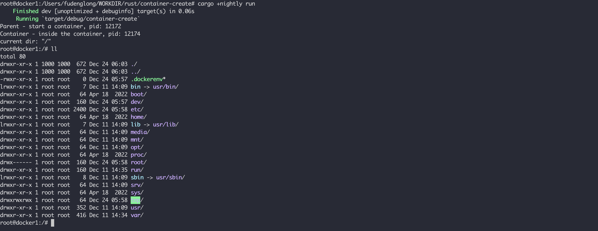
从上面的打印的日志来看，在容器启动的第一个进程PID不是1，因为我们还没有对PID进程隔离，接下来我们隔离PID，做出如下改动，增加 libc::CLONE_NEWPID：
src/main.rs 1 let pid = libc::clone (container_main, stack_top, libc::CLONE_NEWPID | libc::CLONE_NEWNS | libc::SIGCHLD, ptr::null_mut ());
再次运行，看到容器中的首进程PID已经变成1了：
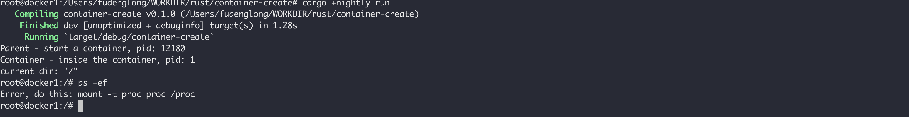
但是运行 ps失败了，提示我们挂载 proc，proc 是Linux运行中内核的一些信息，我们在容器进程中使用下面的代码进行挂载：
1 2 3 4 5 6 7 8 9 10 11 12 13 14 15 16 17 18 19 20 21 22 23 24 25 26 27 28 29 30 31 32 33 34 extern "C" fn container_main (_args: *mut libc::c_void) -> libc::c_int { println! ("Container - inside the container, pid: {}" , process::id ()); fs::chroot ("./rootfs" ).expect ("chroot failed" ); env::set_current_dir ("/" ).expect ("set current work directory failed" ); println! ("current dir: {:?}" , env::current_dir ().unwrap ()); #[cfg(target_os = "linux" )] unsafe { let source = CString::new ("none" ).unwrap (); let target = CString::new ("/proc" ).unwrap (); let fstype = CString::new ("proc" ).unwrap (); let flags = 0 as libc::c_ulong; let data = CString::new ("" ).unwrap (); let result = libc::mount ( source.as_ptr (), target.as_ptr (), fstype.as_ptr (), flags, data.as_ptr () as *const libc::c_void); println! ("mount result: {}" , result); let program = CString::new ("/bin/bash" ).unwrap (); let args = [program.as_ptr (), ptr::null ()]; libc::execvp (program.as_ptr (), args.as_ptr ()); } println! ("Container - Something Wrong" ); return 1 ; }
再次编译运行，执行ps命令可以看到当前进程中的pid是从1开始的：
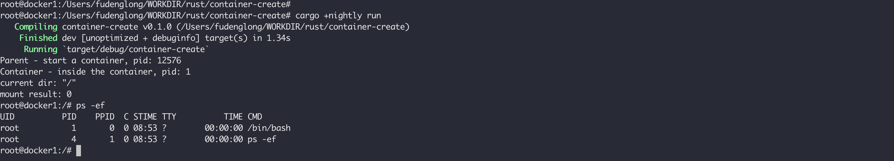
但是如果这个时候查看网络设备，发现很多宿主机上的设备：
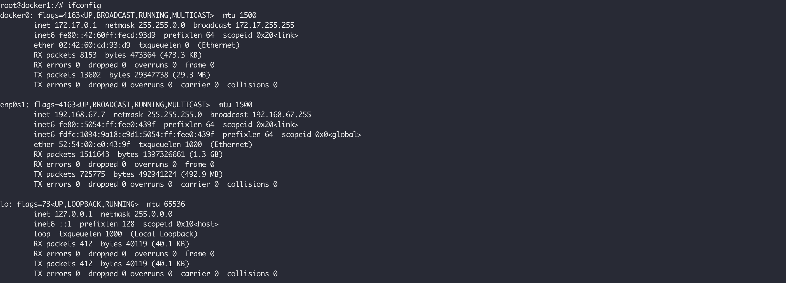
这是因为没有为容器隔离网络设备，需要作如下的改动，在启动容器进程的时候，增加 libc::CLONE_NEWNET：
1 2 let flags = libc::CLONE_NEWNET | libc::CLONE_NEWPID | libc::CLONE_NEWNS | libc::SIGCHLD;let pid = libc::clone (container_main, stack_top, flags, ptr::null_mut ());
再次查看，发现看不到宿主机上的网络设备，只有一个 lo，而且还没启用：
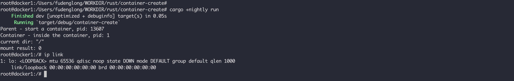
这样的话，我们的容器是没法直接跟外部通信的，我们需要给我们新建的容器添加网卡，设置IP，参考单机容器通信网络，我们给我们的容器赋予和外界通信的能力。首先在宿主机上，查看我们容器的PID，根据父进程 pid：13607 进行查看：
pstree -a -p 13607
1 2 3 root@docker1:/home/ubuntu# pstree -a -p 13607 container-creat,13607 └─bash,13609
在宿主机上执行下面的命令，创建一对 veth 设备：
ip link add veth-host type veth peer name ceth-container
将 ceth-container 添加到我们的容器中：
ip link set ceth-container netns 13609
执行下面的命令，启用 veth-host：
ip link set veth-host up
执行下面的命令给 veth-host 添加IP：
ip addr add 172.17.0.11/16 dev veth-host
将 veth-host 添加到我们的 docker0 网桥上，这样它和我们通过 docker 创建的容器就可以互通了：
ip link set veth-host master docker0
所有上面在主机上的操作如下如所示：
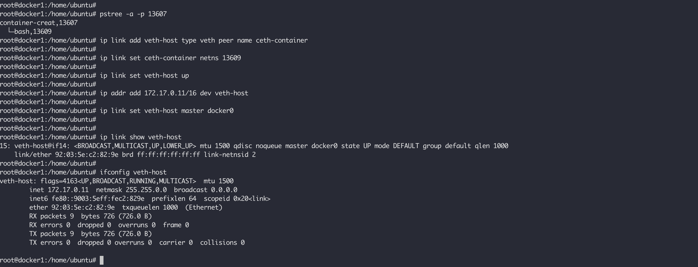
然后我们在我们的容器中执行下面的命令，启用lo，ceth-container，以及为 ceth-container 设置IP：
ip link set lo up
所有在容器中的操作如下图所示：
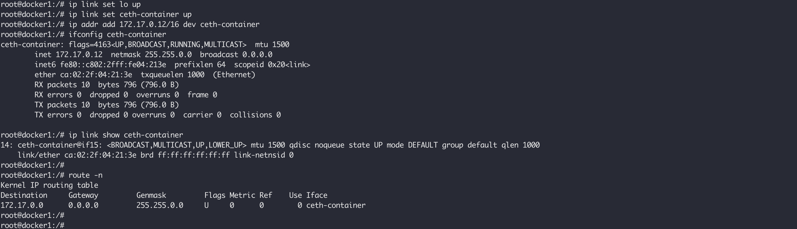
这个时候，假如我们在宿主机有这样一个通过 docker 启动的容器：
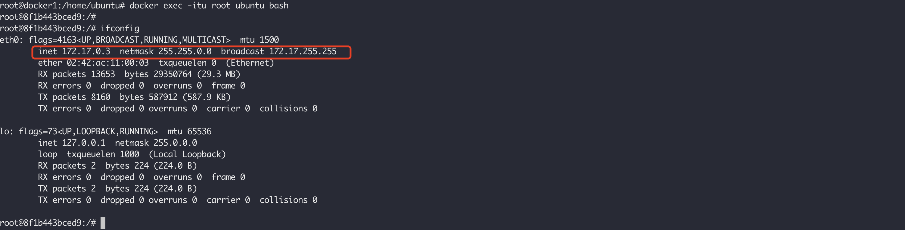
然后在我们手动创建的容器中使用ping命令测试连通性，它肯定是联通的：
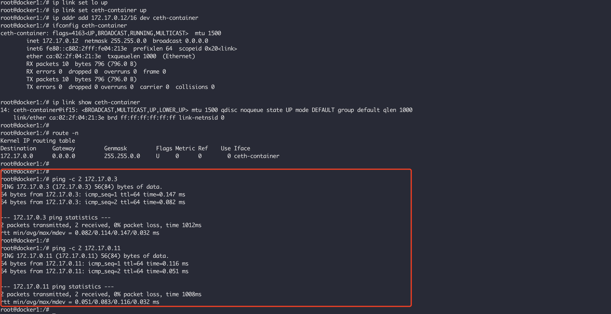
UTS 命名空间允许单个系统对不同进程显示不同的主机名和域名，在没有设置容器名称的时候，和宿主机名称是一致的，例如上面的docker1，我们在创建我们的容器的时候启用 libc::CLONE_NEWUTS，然后给容器设置自定义的名称，全量代码如下：
完整代码
1 2 3 4 5 6 7 8 9 10 11 12 13 14 15 16 17 18 19 20 21 22 23 24 25 26 27 28 29 30 31 32 33 34 35 36 37 38 39 40 41 42 43 44 45 46 47 48 49 50 51 52 53 54 55 56 57 58 59 60 61 62 63 64 65 66 67 68 69 70 71 72 73 74 75 76 77 78 79 80 use once_cell::sync::OnceCell;use std::env;use std::ffi::CString;#[cfg(target_os = "linux" )] use std::os::unix::fs;use std::process;#[cfg(target_os = "linux" )] use std::ptr;static HOSTNAME: OnceCell<String > = OnceCell::new ();extern "C" fn container_main (_args: *mut libc::c_void) -> libc::c_int { println! ("Container - inside the container, pid: {}" , process::id ()); #[cfg(target_os = "linux" )] fs::chroot ("./rootfs" ).expect ("chroot failed" ); env::set_current_dir ("/" ).expect ("set current work directory failed" ); println! ("current dir: {:?}" , env::current_dir ().unwrap ()); hostname::set (HOSTNAME.get ().unwrap ()).expect ("set container hostname failed" ); println! ("current container hostname: {:?}" , hostname::get ().unwrap ()); #[cfg(target_os = "linux" )] unsafe { let source = CString::new ("none" ).unwrap (); let target = CString::new ("/proc" ).unwrap (); let fstype = CString::new ("proc" ).unwrap (); let flags = 0 as libc::c_ulong; let data = CString::new ("" ).unwrap (); let result = libc::mount ( source.as_ptr (), target.as_ptr (), fstype.as_ptr (), flags, data.as_ptr () as *const libc::c_void, ); println! ("mount result: {}" , result); let program = CString::new ("/bin/bash" ).unwrap (); let args = [program.as_ptr (), ptr::null ()]; libc::execvp (program.as_ptr (), args.as_ptr ()); } println! ("Container - Something Wrong" ); return 1 ; } fn main () { println! ( "Parent - start a container, pid: {}, hostname: {:?}" , process::id (), hostname::get ().expect ("get parent hostname failed" ) ); let mut stack = vec! [0u8 ; 4096 * 1024 ]; let args = env::args ().collect::<Vec <String >>(); let mut hostname = "container-default" ; if args.len () > 1 { hostname = &args[1 ]; } HOSTNAME .set (hostname.to_string ()) .expect ("init global var hostname failed" ); #[cfg(target_os = "linux" )] unsafe { let stack_top = stack.as_mut_ptr ().add (stack.len ()) as *mut libc::c_void; let flags = libc::CLONE_NEWUTS | libc::CLONE_NEWNET | libc::CLONE_NEWPID | libc::CLONE_NEWNS | libc::SIGCHLD; let pid = libc::clone (container_main, stack_top, flags, ptr::null_mut ()); libc::waitpid (pid, ptr::null::<libc::c_int>() as *mut libc::c_int, 0 ); } println! ("Parent - container stopped!" ); }
使用如下的命令运行，可以看到的容器名称已经更新成 mycontainer ：
cargo +nightly run -- mycontainer
1 2 3 4 5 6 7 8 9 10 11 12 root@docker1:/Users/fudenglong/WORKDIR/rust/container-create# cargo +nightly run -- mycontainer Compiling container-create v0.1.0 (/mnt/e/rust/container-create) Finished dev [unoptimized + debuginfo] target(s) in 3.53s Running `target/debug/container-create mycontainer` Parent - start a container, pid: 3451321, hostname: "docker1" Container - inside the container, pid: 1 current dir: "/" current container hostname: "mycontainer" mount result: 0 root@mycontainer:/# hostname mycontainer root@mycontainer:/#
到目前为止，我们自己创建的容器中的用户名还是 root，还没有和宿主机隔离开，在 clone 容器的时候添加 libc::CLONE_NEWUSER，重新创建容器：
cargo +nightly run -- mycontainer
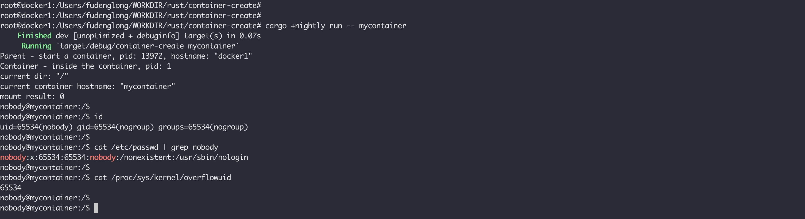
在容器内运行id命令以查看当前进程的UID、GID和组时。在新的命名空间中，该进程属于nobody用户，其UID和GID为65534，该用户是系统中的默认用户。当用户ID在命名空间内没有映射时，返回用户ID的系统调用将返回文件/proc/sys/kernel/overflowuid中定义的值。
所有上面通过代码做的这些操作，我们可以使用一句 unshare 命令完成：
uunshare --mount --net --pid --user --uts --root ./rootfs/ --wd=/home --fork --mount-proc --map-root-user /bin/bash
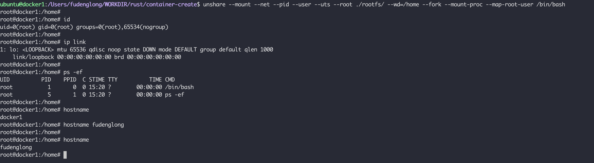
可以通过nsenter进入到容器进程的命名空间中去执行命令，这在容器中没有某些工具，而Host上有的时候比较方便。例如，下面k8s集群中的nginx容器，没有ifconfig命令，我们可以进入到他的网络空间在主机上执行而查看它的网络配置：
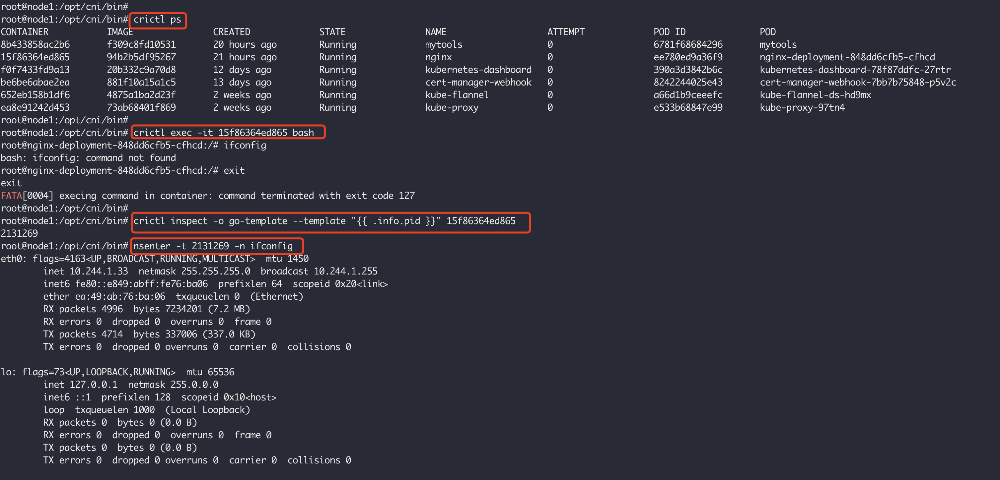
crictl是用于CRI容器运行时的工具，更多的可以看这里 。
Creating Your Own Containers Understanding Linux Namespaces How to Use Linux Network Namespace Building containers by hand using namespaces: The net namespace Separation Anxiety: A Tutorial for Isolating Your System with Linux Namespaces Building a container by hand using namespaces: The mount namespace 容器工作原理简述 Container Runtime in Rust — Part I How Container Networking Works - Building a Linux Bridge Network From Scratch Linux setup default gateway with route command Diving into Linux Namespaces: Understanding User Namespaces in Docker